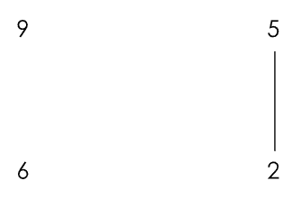
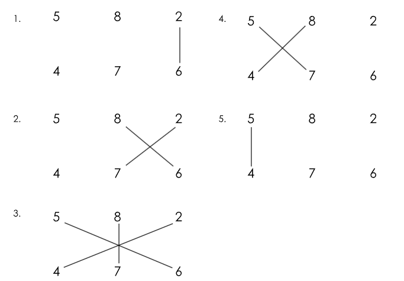

Criss-Cross Method
With paper and pencil at your disposal, you can multiply any pair of two digit numbers!
Example
95*62
Multiply the ones digits.
5*2 = 10.
Keep the ones digit of your product (it will be the ones digit of your answer) and carry over the tens digit.
Cross multiply and add the carried over number from before.
1+ 9*2+5*6= 1+18+30=49.
Once again, keep the ones digit of your product (it will be the tens digit of your answer) and carry over the
tens digit.
Multiply your tens digits and add your previously carried over number.
4 + 9*6 = 58.
Now, take both the digits.
Piece your answer together/Combine the underlined digits!
5890 (58 from the last step, 9 from the second step, 0 from the first step)
Three-digit Multiplication
This method also works for three-digit numbers, in a similar way, though it is more complex and requires 5 instead of 3 steps.
Example
582*476
The method goes like this:
In this case, we can calculate 582*476 with the steps above. We calculate the following digits from each step:
!!! If you have not already, please read the instructions for the 2-digit criss-cross multiplication method
before approaching these 3-digit problems!
Similar to before, underlined numbers are digits to remember, which are also part of our final answer. The
beginning of each step (apart from the first) will have a carried-over digit that will be part of the sum from
the previous step (if there are none then it would be 0).
- 2*6 = 12
- 1+2*7+6*8 = 1+14+48 = 63
- 6 + 2*4+8*7+5*6 = 6+8+56+30 = 100
- 10+8*4+5*7 =10+32+35 = 77
- 7+5*4 = 7+20 = 27
Therefore, our final answer is: 277032.